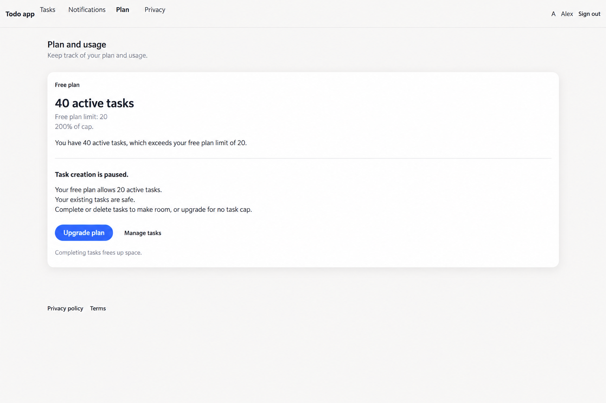
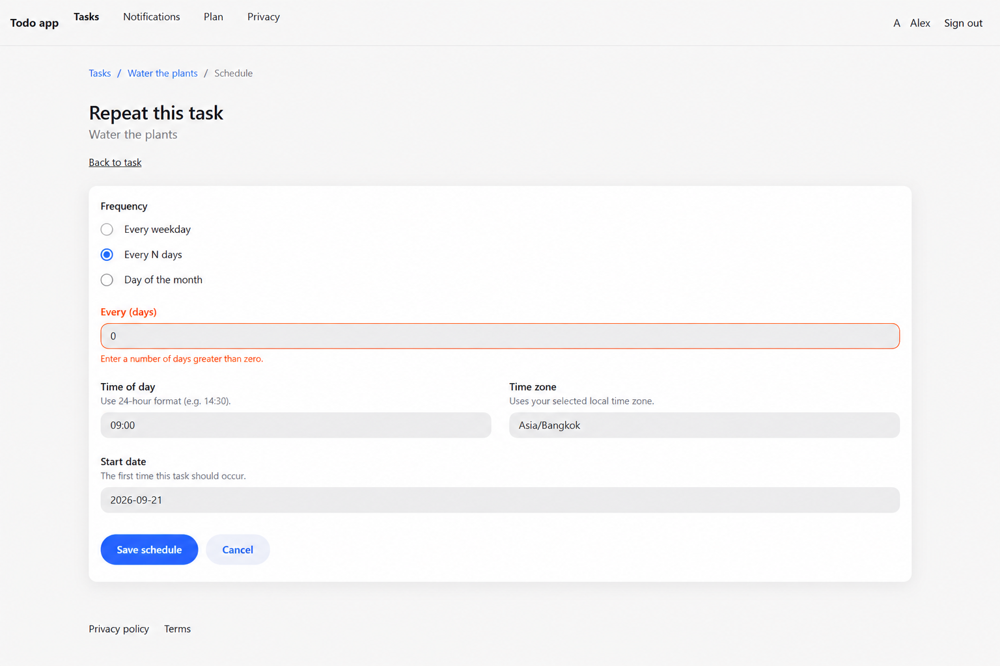
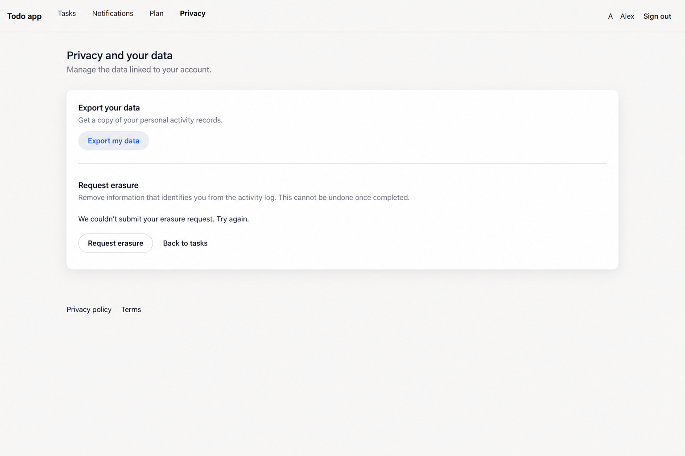
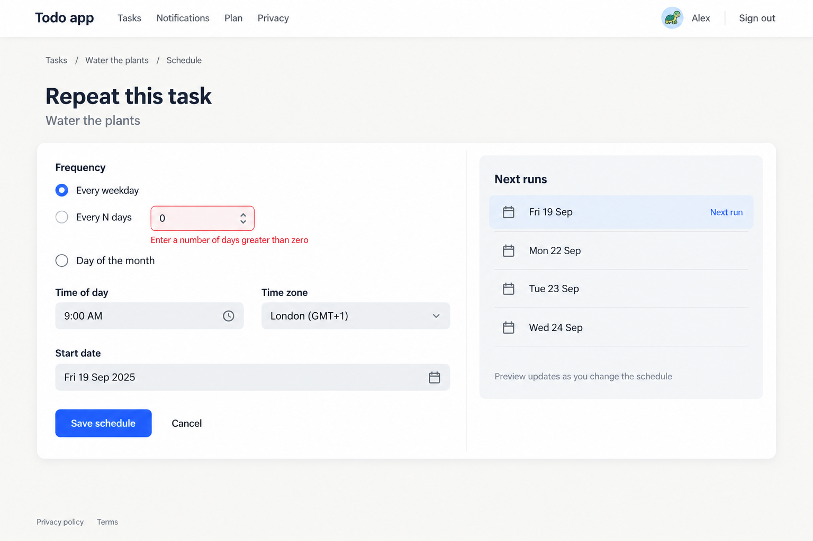
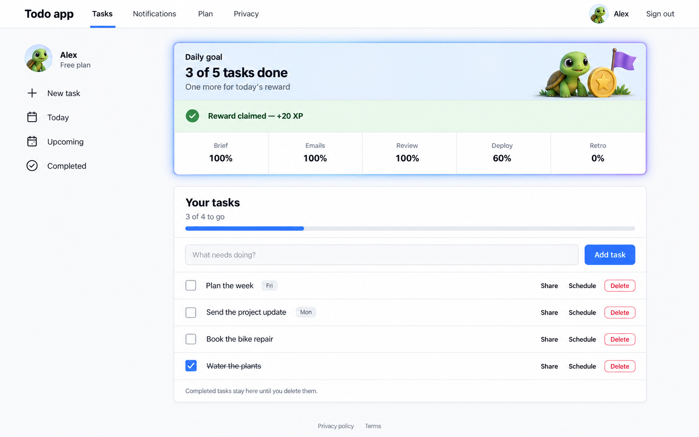
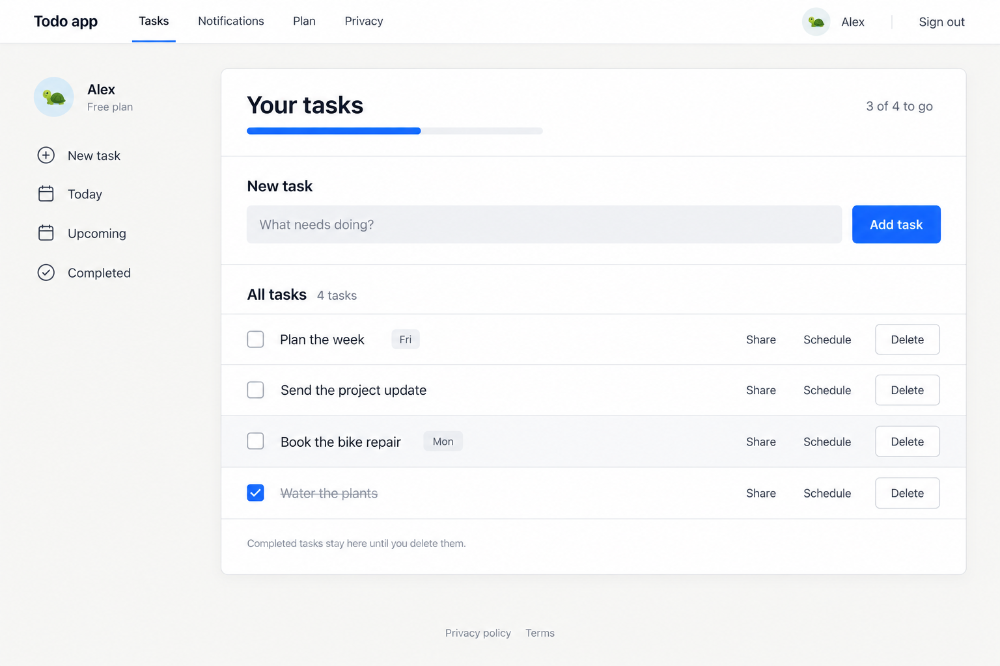
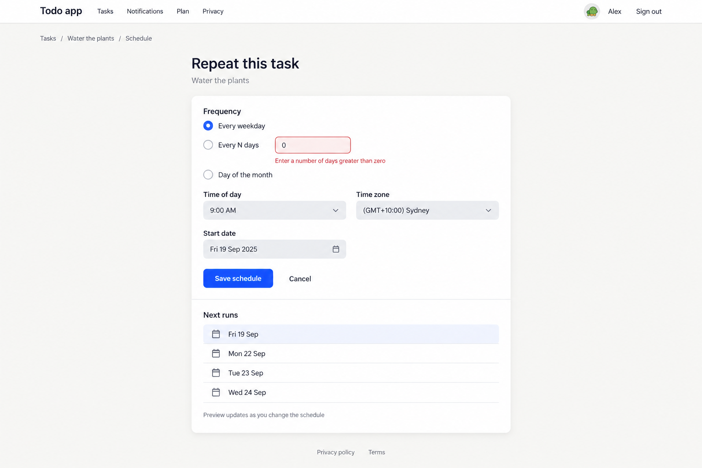

dir-usage.png — PASS over-cap frozen state, stat numbers, upgrade CTA

dir-schedule.png — FLAG breadcrumb links drawn blue (brand: primary only on button/checkbox/selected); error text ~#ff676a vs --starci-core-danger; "Back to task" duplicates breadcrumb

dir-privacy.png — FLAG error message not danger-toned (black); export + erasure = 2 subjects in one SurfaceCard (grammar: one subject per card); blue text on "Export my data"

direction-formula-B4.png — UX-THINKING WINNER: nav left-cluster, turtle-in-avatar, muted breadcrumb, two-column card (form + functional Next-runs aside — no dead space)

direction-formula-B7.png — SPECIAL CARD RECIPE: isHighlight gradient edge + accent hero slab w/ anchored 3D art + success-soft claimed band + flush separators (DailyQuest/ProSubscriptionBlock pattern)

direction-formula-B6.png — ACADEMY LANGUAGE: rail + ONE joined panel card, edge-to-edge section dividers, functional header/composer/collection/footer bands

direction-formula-B5.png — COMPACT JOINED CARD: formCompact measure, joined sections, functional Next-runs preview band, accent-tinted nearest row

Prompt formula proof
@starci/grammar — real component renders (core family, accent #2F6BFF)
sign-in-screen.png — split-screen: illustration left + real form right